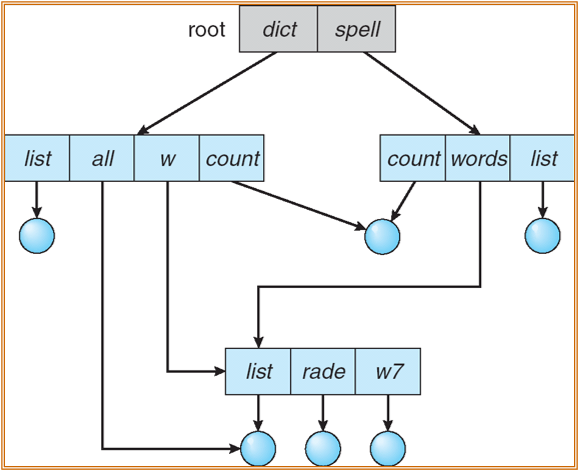

File-System Interface
约 2811 个字 4 行代码 10 张图片 预计阅读时间 19 分钟
文件系统本身对用户是透明的，但是它暴露了一些接口来让用户对文件进行操作。
文件系统结构的设计
如果结构太简单，会导致编程的不便；如果结构太复杂，也会导致操作系统和用户使用的不便。
文件概念
文件概念
文件系统是规定如何在存储介质内部实现存储和获取数据的方法(包含文件命名、存储位置、访问规则、元数据等)。
(从用户的角度来看)文件是一段连续的逻辑地址空间，是一段连续的并且含义由创建者和使用者定义的数据(bits, bytes, lines, or records)，但是在物理的磁盘存储上可能是离散的。
文件的类型包括数据(数字、字符以及二进制)和程序(源文件、目标文件以及可执行文件)。
在系统运行时，计算机以进程为基本单位进行资源的调度和分配；而在用户进行的输入、输出中，则以文件为基本单位。
文件结构
- None(无结构)，只是一串连续的数据(比如数据库中的文件就是无格式的)
- Simple record structure(简单记录结构)，可以是一行一行的数据、固定长度的数据(方便提取，但是容易导致浪费)、可变长度的数据(需要额外的标记来区分记录的起点和终点)
- Complex Structures(复杂结构)，包括格式化文件(包含排版信息)和可重定位加载文件(用于程序执行的文件)
后两种文件都包含了进行文件区分的特殊控制字符，可以用来进行文件的区分。
文件夹本身也是一种特殊的文件，在文件夹中对文件进行打开关闭操作也是对一个文件进行操作的一部分
文件属性
不是文件本身的内容，而是用来描述文件的信息(metadata)，基本都维护在目录结构中
- Name：文件名(是文件最重要的属性)
- Identifier：每一个文件都有一个标识符，是由操作系统分配的，也是操作系统区分文件的标志
- Type：区分不同类型文件
- Location：指向硬件中文件存储的位置
- Size：当前文件大小
- Protection：控制文件访问权限
- Time, date, and user identification：用于实现文件的保护以及使用时的映射
文件操作
- Create：文件创建，有两个必要的步骤：一是为新文件分配外存空间；二是在目录中为之创建一个目录项，目录项记录了新文件名、文件在外存中的地址等信息。
- Write：写文件，定义指针指向写的位置
- Read：读文件，和写文件使用同一个指针
- Reposition within file(file seek)：文件中的定位
- Delete：删除文件，同时删除指定文件对应的目录项和文件控制块，然后回收该文件所占用的存储空间
- Truncate：文件内容追加
Open(Fi) // 搜索目录，打开文件
// 主要是读取文件的元信息加载到内存中，然后将文件的标识符返回给用户
// 从而让用户对文件的实际内容进行操作
Close(Fi) // 删除内存中文件的元信息，将信息移动回磁盘
打开文件表
表中存储表项(entry)，记录文件标识符、文件实际存储的物理位置(指针)[open() 操作返回的]、文件的打开模式等信息
- Per-process table：记录每个进程的文件打开信息，记录指向文件的指针以及访问权限
- System-wide table：记录全局的文件打开信息，存储open count属性记录打开的数量以及文件大小等其他信息
维护两张表的好处
不同进程对文件的处理可能不同(不同的打开位置和操作权限等)，这种信息仅由全局信息表记录是不够的，也就是各个进程记录的信息表很好的实现了隔离性，而全局信息表可以用来保证文件能否从内存中移除(open count是否为0)，从而可以保证较好的一致性
打开文件
- File poiner：指向当前文件读写位置，放在各个进程自己的表中
- File-open count：文件打开计数器，放在全局表中，当值为0时，标识最后一个使用这个文件的进程也关闭了这个文件，操作系统可以释放这个文件的资源
- Disk location of the file：文件在磁盘中的实际位置，从而可以让操作系统对文件进行世界的操作(用户知道的只是逻辑地址)，存储在全局表中
- Access rights：每个进程的处理权限，由各个进程表维护
文件打开锁
一般由操作系统和文件系统提供，用来控制进程对文件的访问。文件锁与读写锁类似，可以实现读的共同锁以及写的互斥锁。
- Mandatory(强制锁)：操作系统自动强制执行
- Advisory(建议锁)：为了在效率和安全性之间形成一种妥协，进程自主决定，依然可以强制访问被锁上的文件
文件类型
不同操作系统使用的文件系统类型
- Windows：MS-DOS
- MAC：MAC OS X
- Linux：UNIX
访问方式
- 顺序读取：物理上的文件读取方式
- 直接(随机)读取：直接读取期望的地址(在固定大小文件中可以实现)
模拟在 Direct-access 文件中连续读取数据
Index and Relative Files实例
目录结构
对应操作系统来说，目录就是一份符号表，将文件名映射到实际的文件控制块(FCB, symble table)上(每一个文件目录项就是一个FCB)，是一个包含了所有文件信息的映射点的集合
对文件名的修改实际上是对FCB的修改，并没有修改文件本身
FCB对空间的占用较大，现在基本已经不使用了，现在使用的映射(inode索引节点)中只包含一个文件名和对应的指针，指向磁盘中的一块空间，那块空间中存储着文件的其他信息
一种典型的文件系统管理
partition是物理的概念，每一个partition对应物理空间上的一块空间，每一个partition上可以放一个卷volume，卷是逻辑上的概念，卷中存储着目录结构(包含系统中的文件信息，具体包括name, location, size and type)以及文件的具体信息。一个partition可以是物理磁盘的一部分，也可以是多个物理磁盘的集合。
设计目录的原则
- 需要有很高的效率，搜索文件快
- 可以命名，已于用户的使用
- 分组，根据使用的方式进行逻辑上的分类
目录结构
单级目录结构

存在的问题
- 不能重命名
- 分组问题
两级目录结构
将文件目录分为主文件目录(MFD)和用户文件目录(UFD)两级
此时不同的用户可以使用相同的文件名，搜索也比较高效，但是缺乏灵活性，并且依然没有分组能力
树状目录结构
每一个FCB都可以挂载一个新的FCB的集合，此时每一级目录的访问都需要进行新的I/O操作，但是此时操作系统会存储当前目录(也叫工作目录)，从而使得搜索文件的时候无需从链表的头部开始寻找，可以加快查找的速率。
- FCB中挂载的是文件或者目录
- 搜索较快，并且可以实现分组
- 会有当前的工作目录(current directory)
- 存在绝对路径和相对路径
- 缺点：在树形目录中查找一个文件，需要按路径名逐级访问中间节点，增加了磁盘访问次数，会在一定程度上影响查询速度
无环图目录结构
产生原因：
- 需要实现文件共享
- 具有共享的子目录和文件

存在的问题
同一个文件可能会出现错误使用
- 复制时的多次复制
- 删除时导致的挂起指针(dangling pointer)
- 通过使用环指针(Backpointers: keep a list of references to a file)来解决：删除时删除所有指向这个文件的指针,但是开销较大
- 另外一种解决方式是link：另外一个指向存在文件的指针
General Graph目录
采用无环图的一个严重问题是确保没有环(感觉问题应该是无环图确保没有环的开销比较大?)
- 如果存在环，就会导致
- 重复搜索同一个文件
- 文件删除问题(因为自我引用的问题，导致文件的引用计数不会是0)
- 如何确保没有环
- 仅允许链接到文件，不能链接到文件夹
- Garbage collection，用来确定何时最后引用已被删除并重新分配磁盘空间。垃圾收集设计遍历整个文件系统，并标记所有可访问的。接着，第二次遍历收集所有未标记的到空闲空间列表。(类似的标记程序可用于确保，需一次且只一次就可遍历活搜索文件系统的一切)。但是因为用于磁盘文件系统的垃圾收集极为费时没所以很少使用。
- 每添加一个新的链接时，使用环路检测算法来检测是否可以添加。
Soft link VS Hard link
- soft link：新的用户创建一个新的索引节点直接指向一个新的文件，这个新的文件中只存一个路径字符串，这个路径就是访问这个文件的方式，因为这是一种字符串而不是指针，所以即使删除了文件也不会出现严重的错误，只是提示找不到文件。
- 软链接会有自己的FCB，并且内容时文件路径而不是具体的文件数据(每个文件系统都有自己的inode，inode号在不同的文件系统中可能重复)
- 最大优点：可以跨越文件系统来实现文件的连接
- 缺点：降低了查找效率
- hard link：不同用户都是通过同一个索引节点来引用具体的文件，每当有一个新的用户使用该文件，link count就会加1，也就是说，如果有新的用户要引用文件时，用户本身的文件目录会新增一个指向所引节点的指针，然后索引节点上的引用计数会加1。(用户的引用不会直接指向文件本身，只有索引节点指向文件本身)
软链接可以跨越文件系统，但是硬链接不行，因为硬链接不能够指向一个文件夹(为了保证不会出现环路)。硬链接的查找速度要比软链接的快。